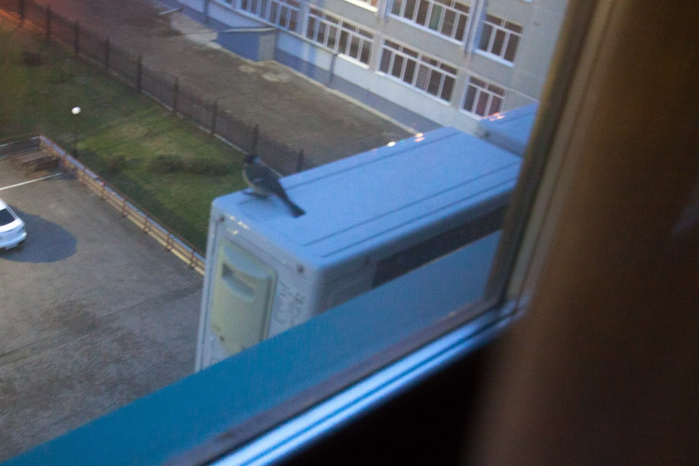

Подле нашего дому есть небольшая рощица. Летом по утрам в ней поют соловьи. Соловьи пока не прилетели, и в этом году всё складывается гораздо хуже.
Уже пару недель как, ровно в 4:40, каждый божий день на кондиционер под окном (а окно ночью открыто) садится синица и начинает петь о своей синичьей любви. Фактически она сидит в этот момент в метре он нашего ложа.
Я дожил до 30 с хвостиком лет, но отродясь не знал, что синицы могут так громко петь. Так громко, что Наташа как-то спросила меня: ты что, сменил мелодию будильника?
Спать в этот момент абсолютно нельзя, поэтому приходится вставать и, махая руками, приговаривать: «Синица, лети прочь, буди не меня, а тех, кто мои посты не лайкает».
Сегодня сфотал проказницу, правда с рук, и в темноте. Если не забуду поставлю на ночь у окна штатив.
